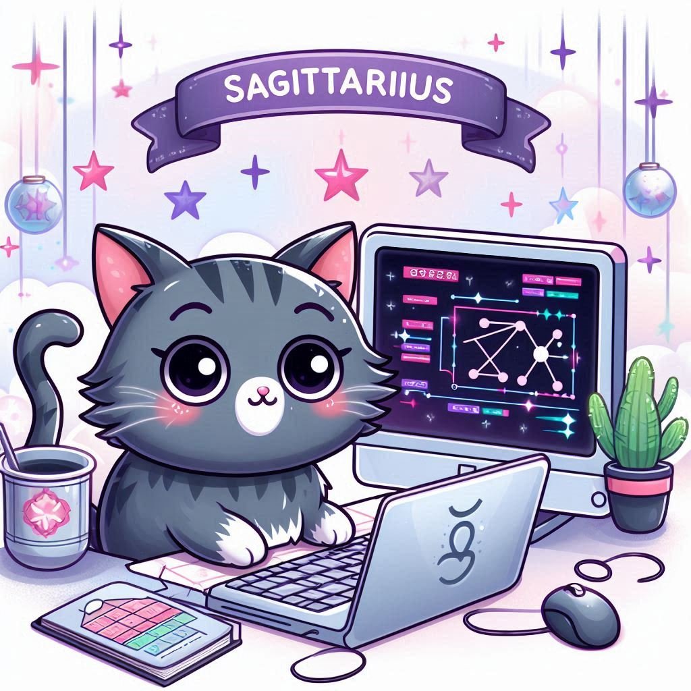

For Sagittarius girls venturing into the world of coding, this month promises a thrilling journey
filled with exploration and growth. Your adventurous spirit and love for learning will fuel your
coding pursuits as you delve into new technologies and projects. Embrace the challenges ahead with
optimism and confidence, knowing that each obstacle is an opportunity for you to expand your skills
and knowledge.
The cosmos aligns in your favour this month, guiding you towards exciting opportunities in the realm
of coding. Embrace your curiosity and embrace the unknown, for it is through exploration that you
will discover new passions and pathways to success. Trust in your intuition and allow your
creativity to flourish as you embark on this coding adventure.
Learning and Development
As a Sagittarius, you thrive on discovery and intellectual stimulation. Use this month to broaden your
coding horizons by exploring diverse programming languages and methodologies. Enroll in online courses
or attend coding workshops to expand your skillset and deepen your understanding. Embrace the spirit of
experimentation and be open to new ideas and perspectives.
Personal Growth
While immersing yourself in the world of coding, remember to nurture your personal growth and well-being.
Find balance by incorporating activities that feed your soul, whether it's hiking in nature, practicing
mindfulness, or pursuing creative hobbies. Take time to reflect on your journey and celebrate your
progress, honouring the wisdom gained from both successes and setbacks.
Career
Your career in coding is on an upward trajectory this month, fueled by your passion and determination.
Seize opportunities to take on leadership roles and showcase your expertise to colleagues and superiors.
Your innovative ideas and unique perspective will set you apart in the workplace, opening doors to new
projects and responsibilities. Stay focused on your goals, and success will be yours to claim.
Lucky days for coding: 7th, 16th, 25th
Power color: Sea Green
Embrace the challenges and opportunities that come your way this month, and let your coding skills shine
bright!